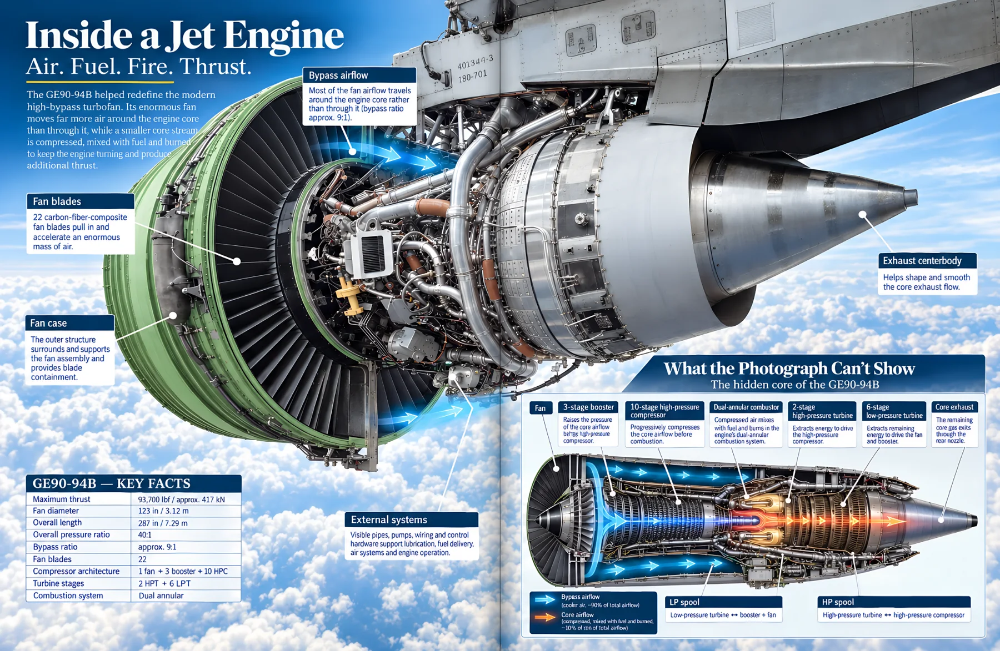

The hidden world becomes visible.
They don’t just see the machine. They see inside it.
Large cutaways reveal the spaces, chambers, pipes, mechanisms and structures normally sealed behind metal, concrete and walls.
Visual Learning · For Children · Engineering & STEM
You see the outside every day.
Now see what is really inside.
Cut open 40 real machines, buildings and hidden systems—and follow how every part works together.
Move to explore · Click to look inside
“My son spent twenty minutes on the jet engine spread before he even turned the page.”More reviews ↓
See inside the book
The book opens as you reach it. Use the arrows or chapter markers to explore five real interior spreads.

Swipe to turn
Follow air, fuel, fire and thrust through a modern high-bypass turbofan.
Spread 1 of 5
Why readers enjoy it
Three reasons young readers keep turning the pages.
The hidden world becomes visible.
Large cutaways reveal the spaces, chambers, pipes, mechanisms and structures normally sealed behind metal, concrete and walls.
The pictures do the explaining.
Arrows, labels and operating scenes show where each part sits, what it does and how one action causes the next.
There is always one more thing to find.
Dense visual details, real engineering ideas and varied subjects make every spread worth revisiting after the first answer is found.
Reader reviews
“My son spent twenty minutes on the jet engine spread before he even turned the page. Then he came back to it twice.”
“This is exactly the kind of nonfiction my daughter likes—lots to inspect, but the labels are short enough that she never feels buried in text.”
“The variety surprised me. One minute we were looking at a steam locomotive, the next at the Colosseum and then a machine that makes microchips.”
“He kept pointing at arrows and telling me what happened next. That is a much better sign than asking whether he understood it.”
“It feels like taking the side off things you would never be allowed to take apart in real life.”
Frequently asked
No. The explanations are concise and visual-first. The engineering ideas are real, but the book is designed to be explored rather than studied chapter by chapter.
Forty subjects span machines, buildings, hidden city infrastructure and modern technologies—from jet engines and locomotives to underground systems and precision technology.
Yes. Each cutaway shows not only what the parts are, but where they sit, what they do and how flows of air, water, energy, material or motion connect them.
Yes. The visual explanations make it useful for STEM enrichment, engineering discussions, project starters and independent browsing.
It is designed for curious readers ages 8+, but many of the systems and cutaways are detailed enough to interest adults too.
Bring the hidden world home
Give a curious reader a visual journey through the machines, buildings and systems that quietly make the modern world work.
 Paperback · Ages 8+View on Amazon↗You’ll continue securely on Amazon.Look inside again ↑
Paperback · Ages 8+View on Amazon↗You’ll continue securely on Amazon.Look inside again ↑